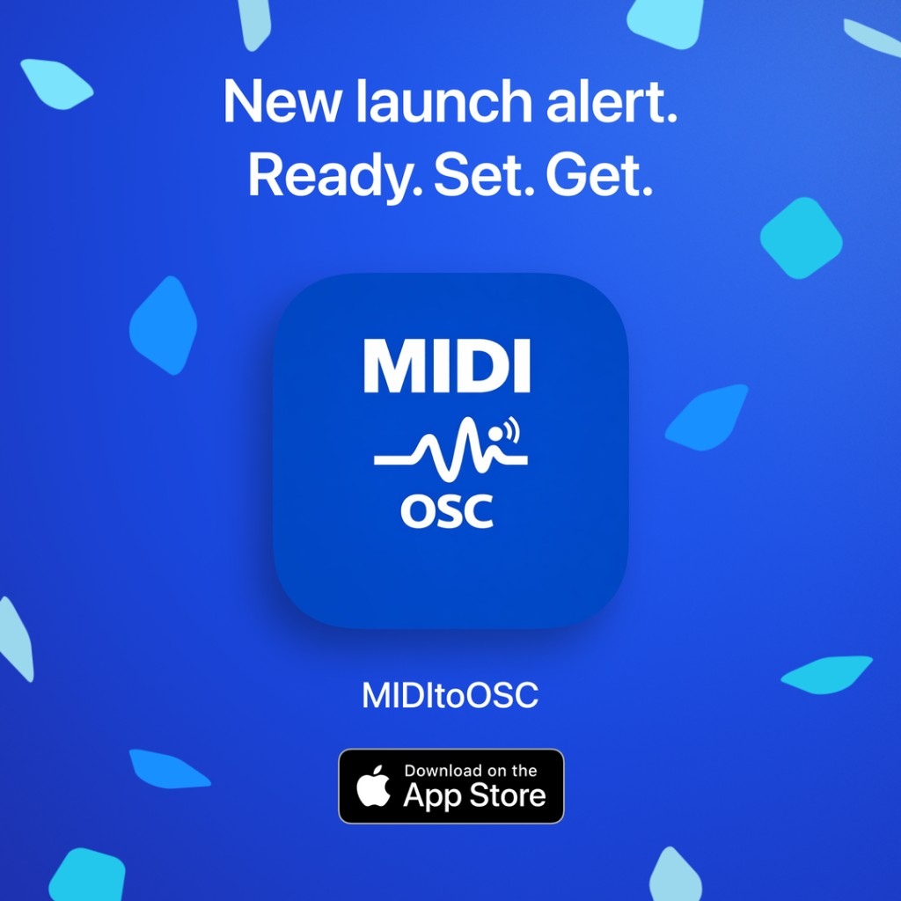
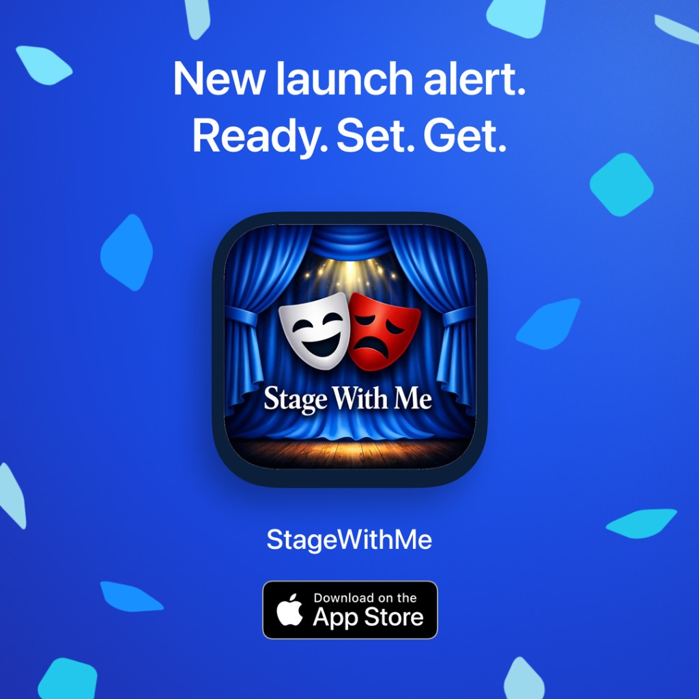

Accesible
QLab-en oinarritutako ikuskizunetarako irisgarritasun aplikazioa.
Mac App Store-an erabilgarri. Harpidetza berrientzat 7 egun doan (eskubidea baduzu); baldintzak erosketan.
Automatizazioa, irisgarritasuna eta lan-fluxu teknikoak kudeatzeko software espezializatua.
QLab, OSC, PJLink eta nahasgailu digitalekin lan egiteko tresnak.
QLab-en oinarritutako ikuskizunetarako irisgarritasun aplikazioa.
Mac App Store-an erabilgarri. Harpidetza berrientzat 7 egun doan (eskubidea baduzu); baldintzak erosketan.
PJLink proiektoreen shutter/power kontrola botoiekin edo OSC bidez.
Gehiago ikusiiPhone eta Apple Watch: PJ-LINK zuzenean (TCP 4352) bere kabuz dabil. OSC birbidaltzeak Mac-en Shutter PJ-OSC behar du: instalatuta, konfiguratuta eta martxan.
Gehiago ikusiMidas M32 / Behringer X32 MIDI datuak OSC agindu bihurtzen ditu.

Mac App Store-n (macOS). TestFlight beta eskuragarri.
Aktoreentzako entsegu app-a: ahots sintetikoak erreplikak ematen ditu, zure ahotsa grabatzen du, eta saioak gordetzen ditu bilakaera ikusteko.

App Store-n eskuragarri StageWithMe izenarekin. TestFlight beta irekita jarraitzen du aurreikuspenetarako.
Taula hau erabil ezazu ekoizpen-lan bakoitzerako tresna egokia aukeratzeko.
Konparaketa ikusiProiekzioa, irisgarritasuna eta nahasgailu automatizazioa uztartzen dituzten fluxu errealak.
Kasuak ikusiDokumentazio estekak eta konfigurazio gomendio praktikoak.
Baliabideak ireki